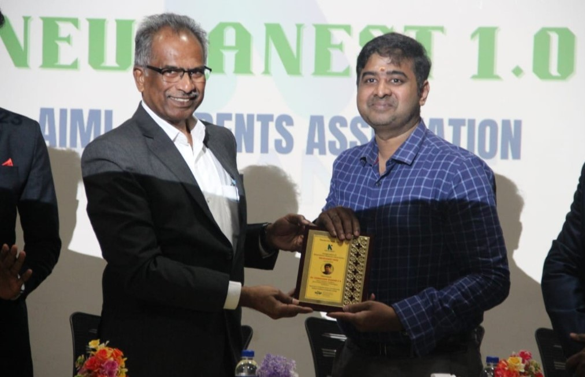
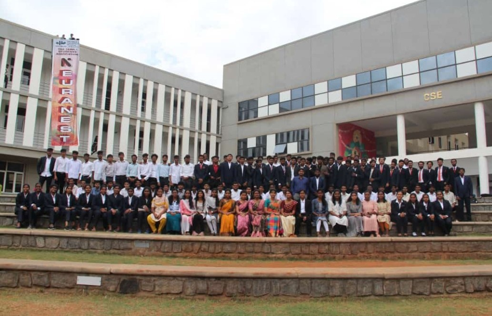
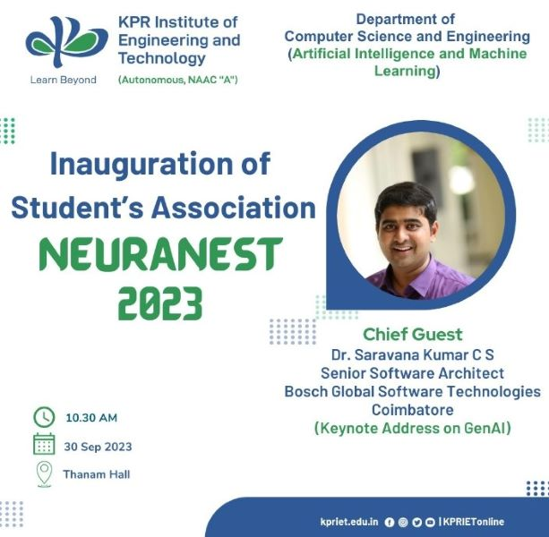

<!-- <div class="total">
      <div class="event_page">
          <h1>ASSOCIATION INAUGURATION</h1>
          <div class="images">
              <div class="slideshow">
                  
                  
                  
                  <i class="prev fas fa-chevron-left"></i>
                  <i class="next fas fa-chevron-right"></i>
              </div>
          </div>
          <div class="info">
              <div class="guest">
                  <h2>Chief Guest</h2>
                  <h3>Dr. Saravanakumar</h3>
                  <p>Senior Software Architect, Bosch Global Software 
                     Technologies was the Chief Guest of the Event. 
                      He delivered the address on 'GEN AI and Data Analytics'</p>
              </div>
              <div class="time_date">
                  <div class="icon">
                      <i class="fa-regular fa-clock" ></i>
                      <i class="fa-solid fa-calendar-days"></i>
                      <i class="fa-solid fa-location-dot"></i>
                  </div>   
                  <DIV class="data">
                      <h6>DATE</h6>
                      <P>Sep 30, 2023</P>
                      <H6>TIME</H6>
                      <P>10:30 AM to 12:30 PM</P>
                       <H6>LOCATION</H6>
                      <P>Thanam Hall</P>
                 </DIV>
                 
              </div>
          </div>
      </div>
  </div>